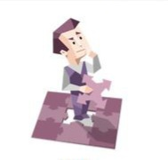

INTP : شخصية المنطقي

شخصية انطوائية ، حدسية ، عقلانية ، مرن
المفكر له حالتين. الحالة الأولى داخلية ومن خلالها يستخدم المفكر المنطق والعقل ليتعامل مع الأشياء. والآخر هو خارجي حيث يفاضل بين الأشياء بإستخدام حدسه. المفكر يعيش حياته بين الاحتمالات، ويرى الأشياء بعين المصحح الذي يبحث عن طريقة جعلها تعمل بشكل أفضل، أو كيف من الممكن أن تئول إليه في تعامله مع العالم الخارجي،
كل ما يعمل عليه هو نزاهة الحكم ، مخترعون، مبتكرون ،و لديهم عطش جامح للمعرفة
نقاط القوة
- نَهج منطقي لأي قَضية
- حلول شاملة ومحكمة للمشاكل
- أفكار وَحلول خَارج الصندوق
- غير متطلب، في حاجاته اليومية
- غالباً ما يكون متساهلاً وسهل المعاشرة، وعلى إستعداد للتضحية لأقرانهم
- واسع الإبداع والخيال
- يعمل بحماس شديد على الأشياء التي تشدهم
التواصـل
- مُحايد عاطفياً
- ساخر وأحياناً صادق وصريح
- يضع الرسائل المُعتددة في رسالة طويلة واحدة
الدوافـع
- التَحليل الشامل وَالحدس
- وقت بِمفرده لإعادة الشحن
- البحث عَن الأسباب الجَذرية للمشكلة
INTP كأب و أم
يرغبون بنقل المعرفة الواسعة التي يمتلكونها لأطفالهم ، يرغبون بتربية أطفالهم ليكونوا اقوياء مستقلين عندما يكبرون حيث يمكنهم الافتخار بهم ، يردون من اطفالهم أن يكونوا على طبيعتهم ولا يرغبون بتغير شخصيات أطفالهم بأي شكل من الأشكال
INTP كطالب
الذكي المهووس بالعلم والمتحفظ جدا
نسبـة intp في العالم : 3%